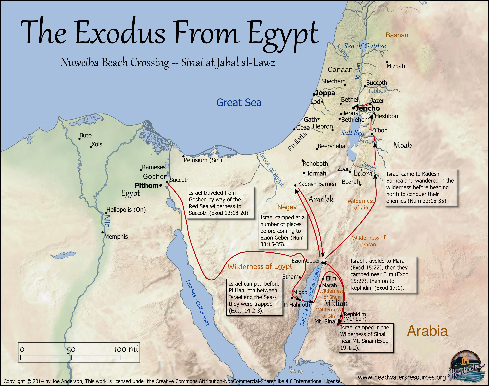
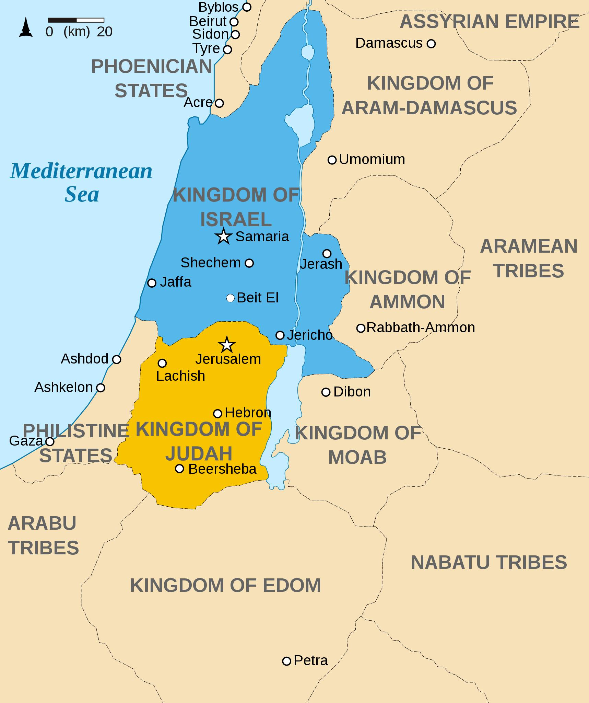

Biblical–Abrahamic Historical Timeline
Timeline
- Moses and the Exodus from Egypt → Wandering in Sinai (40 years)
- Moses views the Promised Land from afar and dies outside it
- Joshua succeeds Moses and leads the Conquest of Canaan
- Period of the Judges → Samuel emerges as prophet
- Saul becomes first king; David defeats Goliath and captures Jerusalem
- Solomon builds the First Temple; Ark of the Covenant placed inside
- Kingdom splits: Israel (north) and Judah (south)
- Assyria destroys Northern Kingdom (Israel)
- Babylon destroys Judah and the First Temple; Exile
- Cyrus of Persia allows return; Second Temple built
- Alexander the Great conquers the region; Hellenistic rule
- Maccabean revolt leads to independent Jewish kingdom
- Roman conquest; Second Temple destroyed (70 CE); Diaspora
Illustrative Timeline Markers (schematic)
Moses and Aaron → Exodus → Joshua → David → Temple I → Exile → Temple II → Rome

The Exodus From Egypt — route map (schematic).

Map showing Kingdom of Israel (north) and Kingdom of Judah (south) in the Levant.

Babylonian Exile — schematic map showing movement toward Babylon.
United Kingdom of Israel around the time of Saul and David (schematic).